waterflow.flow1d package¶
Submodules¶
waterflow.flow1d.flowFE1d module¶
One dimensional finite elements flow module
-
class
waterflow.flow1d.flowFE1d.Flow1DFE(id_, savepath='C:\Users\bramb\Documents\thesis\output')[source]¶ Bases:
objectClass for solving flow problems numerically
This class represents an object that can be used to solve (un)saturated 1-dimensional flow problems using finite elements. To increase the accuracy of numerical solutions the Gaussian quadrature method is used for integration approximation.
Most of the methods applied on the object will change its internal state rather than returning a value. The change of the system is saved in any of its public attributes.
- Parameters
id_ (str) – Name of the model object.
savepath (str, optional) – Directory to which model data will be saved.
-
id_¶ Name of the model object.
- Type
str
-
savepath¶ Model’s save directory.
- Type
str
-
systemfluxfunc¶ Holds the selected flux function.
- Type
function
-
nodes¶ Nodal positions at which the system will be solved.
- Type
numpy.ndarray
-
seg_lengths¶ Lengths of segments between the nodes in the shape
![[1 \times N - 1]](_images/math/8352963b428c449130710d8c0c9efa6fc9f3e7f8.png) .
.- Type
numpy.ndarray
-
lengths¶ The same data as in
seg_lengthsbut in a different representation. This representation has the shape![[1 \times N]](_images/math/12617a66745b1b5f689f3a466529a4c201e26bac.png) . This is more convenient for static
state independent spatial forcing calculations.
. This is more convenient for static
state independent spatial forcing calculations.- Type
numpy.ndarray
-
coefmatr¶ Square jacobian matrix used in the finite elements solution procedure. The exact dimension of the matrix is .
- Type
numpy.ndarray
-
BCs¶ This contains the system’s boundary conditions. The keys that indicate the positions are “west” and “east”. The corresponding values have the following format:
(boundary_condition_value, type, domain_index).
- Type
dict
-
pointflux¶ Contains the scalar point fluxes on the model domain. The key : value pairs in the dictionary have the following format:
‘Flux name’ : [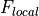 of shape
]- Type
dict
-
Spointflux¶ Contains state dependent point flux functions on the model domain. The key : value pairs in the dictionary have the following format:
‘Flux name’ : [(
 , (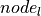, 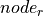,
, (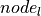, 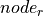,  ,
,  )), of shape ]
)), of shape ]- Type
dict
-
spatflux¶ Contains the spatial fluxes on the model domain. Both the scalar and the calculated position dependent spatial flux function values. The key : value pairs in the dictionary have the following format:
name : [ of shape
]- Type
dict
-
Sspatflux¶ Contains state dependent spatial fluxes on the model domain. The key : value pairs in the dictionary have the following format:
name : [
 , of shape ]
, of shape ]- Type
dict
-
internal_forcing¶ The internal forcing of the system as calculated with
systemfluxfunc, using the selected Gaussian quadraturedegree.- Type
dict
-
forcing¶ All the forcing fluxes applied to the system including the storage change forcing. This is the matrix that will be used for the Newton-Raphson solving procedure. The dimension of this matrix is
.- Type
numpy.ndarray
-
conductivities¶ Hydraulic conductivities at the nodal positions,
nodes. These values are calculated with the conductivity function as given in thesystemfluxfunc.- Type
numpy.ndarray
-
moisture¶ Moisture contents at the nodal positions,
nodes. These values are calculated with the explicitly assignedtfun.- Type
numpy.ndarray
-
isinitial¶ First object that contains initial input which has not been solved for yet. This attribute is set to
Falsewhen the model object has been solved for.- Type
bool, default is True
-
isconverged¶ The system has converged to a solution.
- Type
bool, default is False
-
solve_data¶ Holds the solve information of the system including the following key : value pairs:
solved_objects - A list of Flow1DFE objects at solved time steps.
time - A list of times at which the model states are calculated.
dt - A list of time step sizes between consecutive model solutions.
- iter - A list containing the number of iterations needed forconsecutive model solutions to converge.
- Type
dict
-
df_states¶ Current information about the static model solution.
- Type
pandas.core.frame.DataFrame
-
df_balance¶ Current static information about the water balance.
- Type
pandas.core.frame.DataFrame
-
df_balance_summary¶ Sum of the columns as saved in
df_balance.- Type
pandas.core.frame.DataFrame
-
dft_solved_times¶ Dataframe version of
solve_data.- Type
pandas.core.frame.DataFrame
-
dft_print_times¶ Objects that contain a solution to the model at specific times, calculated with
transient_dataframeify().- Type
pandas.core.frame.DataFrame
-
dft_states¶ Collection of all
df_statesdataframes for the times indft_solved_timesor atprint_timesif not None.- Type
dict
-
dft_nodes¶ Nodes that are selected in
transient_dataframeify()are saved atdft_solved_timesor atprint_timesif not None.- Type
dict
-
dft_balance¶ Collection of all
df_balancedataframes atdft_solved_timesor atprint_timesif not None.- Type
dict
-
dft_balance_summary¶ Collection of all
df_balance_summarydataframes atdft_solved_timesor atprint_timesif not None.- Type
pandas.core.frame.DataFrame
-
_west¶ Internal value that differentiates between a Dirichlet or Neumann boundary condition on the western side of the domain.
- Type
int
-
_east¶ Internal value that differentiates between a Dirichlet or Neumann boundary condition on the eastern side of the domain.
- Type
int
-
_delta¶ Fixed value used for the finite displacement in the derivatives of the jacobian matrix,
coefmatr. This value may be changed manually for extremeley steep gradients.- Type
float
-
gauss_degree¶ Degree or number of points used in the Gaussian quadrature procedure for integral approximation.
- Type
int
-
_xgauss¶ Roots of Legendre polynomial on the interval [0, 1] for the selected
gauss_degree.- Type
tuple
-
gaussquad¶ Combination of corresponding values of
_xgaussandwgaussinto a single data structure.- Type
list
-
xintegration¶ Absolute positions of the Gaussian quadrature points in the domain
nodes. The shape of this list is .- Type
list
-
_CMAT(nodes, states)[source]¶ Build the jacobian matrix
Build the complete jacobian matrix according to the finite elements scheme for the selected degree
 . The jacobian matrix
. The jacobian matrix
 is assigned to
is assigned to coefmatr.- Parameters
nodes (numpy.ndarray) – Array that contains the nodal positions.
states (numpy.ndarray) – Array that contains the states at the nodal positions.
Notes
The jacobian matrix
is build from three individual parts.(1)¶
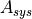, derivatives of the
systemfluxfunc. , derivatives of functions in
, derivatives of functions in Sspatflux.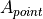, derivatives of functions in
Spointflux.
System’s flow equation jacobian
The derivatives of the systemflux function,
 , are collected
in . The equation below describes how the
derivatives are calculated in which the Gaussian quadrature scheme
is accounted for.
, are collected
in . The equation below describes how the
derivatives are calculated in which the Gaussian quadrature scheme
is accounted for.(2)¶
Argument
 represents the absolute position
of the Gaussian quadrature point as saved in
represents the absolute position
of the Gaussian quadrature point as saved in xintegration. The state argument at this specific Gaussian quadrature point is calculated as follows:(3)¶
The third argument, , is the gradient of the state between the nodes of the current segment and is calculated as shown below:
(4)¶
presents the structure of the sparse jacobian matrix in which the derivatives of the systemflux function
are
saved.(5)¶
![A_{sys} = \begin{bmatrix}
-\frac{\delta Q}{\delta x}_{i} & -\frac{\delta Q}{\delta x}_{i} & & & & \\
\frac{\delta Q}{\delta x}_{i} & \frac{\delta Q}{\delta x}_{i} -\frac{\delta Q}{\delta x}_{i+1} & -\frac{\delta Q}{\delta x}_{i+1} & & & \\
& \frac{\delta Q}{\delta x}_{i+1} & \frac{\delta Q}{\delta x}_{i+1} -\frac{\delta Q}{\delta x}_{i+2} & \ddots & & \\
& & \ddots & \ddots & & \ddots & \\
& & & \ddots & & \frac{\delta Q}{\delta x}_{N-1} -\frac{\delta Q}{\delta x}_{N} & -\frac{\delta Q}{\delta x}_{N} \\
& & & & & \frac{\delta Q}{\delta x}_{N} & \frac{\delta Q}{\delta x}_{N}
\end{bmatrix}](_images/math/8d13da7bdfe9bc304ce0b5d0eb379dc877fb731a.png)
Spatial state dependent jacobian
The derivatives of the state dependent spatial fluxes
, if
present, are collected in . The calculation of these
derivatives is described by the equations below. The values are summed
at every segment in the model domain, taking into account the selected
Gaussian quadrature scheme.(6)¶
(7)¶
Argument
represents the absolute position
of the Gaussian quadrature point as saved in xintegration. The state argument at this specific Gaussian quadrature point is calculated as follows:(8)¶
The structure of the sparse jacobian matrix,
, of the
sum of all state dependent spatialflux functions is shown below:(9)¶
![A_{spat} = \begin{bmatrix}
\Sigma \frac{\delta S_{l}}{\delta x}_{i} & \Sigma \frac{\delta S_{r}}{\delta x}_{i} & & & & \\
\Sigma \frac{\delta S_{l}}{\delta x}_{i} & \Sigma \frac{\delta S_{r}}{\delta x}_{i} + \Sigma \frac{\delta S_{l}}{\delta x}_{i+1} & \Sigma \frac{\delta S_{r}}{\delta x}_{i+1} & & & \\
& \Sigma \frac{\delta S_{l}}{\delta x}_{i+1} & \Sigma \frac{\delta S_{r}}{\delta x}_{i+1} + \Sigma \frac{\delta S_{l}}{\delta x}_{i+2} & \ddots & & \\
& & \ddots & \ddots & & \ddots & \\
& & & \ddots & & \Sigma \frac{\delta S_{r}}{\delta x}_{N-1} + \Sigma \frac{\delta S_{l}}{\delta x}_{N} & \Sigma \frac{\delta S_{r}}{\delta x}_{N} \\
& & & & & \Sigma \frac{\delta S_{l}}{\delta x}_{N} & \Sigma \frac{\delta S_{r}}{\delta x}_{N}
\end{bmatrix}](_images/math/0a31ab6fadd6e2abd11dff7fde03e2c87bba4070.png)
Point state dependent jacobian
The derivatives of the state dependend point fluxes,
, if
present, are collected in . The derivates are
calculated for the specific functions, distributed to the two nearest
nodes and summed to a total at this specific position. This is
described by the equations below:(10)¶
(11)¶
The state argument, , is calculated by linear interpolation between the nearest nodes.
(12)¶
The structure of the jacobian matrix, , of the sum of all state dependent pointflux functions is shown below:
(13)¶

-
_FE_precalc()[source]¶ Discretization lengths
Calculate the values for
seg_lengthsandlengths.Notes
The lengths of the segments between the nodes are calculated a follows. The number of segments is always one less than the number of nodes in the system.
(14)¶

To assign a length to every node in the system, a different approach has been used. Except for the boundary cases, the differences of the midpoints between the nodes has been taken as a segment length. See the exact definition:
(15)¶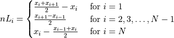
Multiplication of 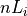 with scalar or sequence like spatial fluxes results in a forcing array that has the shape
which is convenient for direct addition to the
global 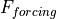 matrix.Examples
>>> from waterflow.flow1d.flowFE1d import Flow1DFE >>> FE = Flow1DFE("Flow equations") >>> # FE_precalc() is called implicitly by set_field1d() >>> FE.set_field1d((-10, 0, 11)) >>> FE.seg_lengths array([1., 1., 1., 1., 1., 1., 1., 1., 1., 1.]) >>> FE.lengths array([0.5, 1. , 1. , 1. , 1. , 1. , 1. , 1. , 1. , 1. , 0.5])
-
_aggregate_forcing()[source]¶ Aggregation of state independent forcing
The state independent forcing saved in
pointfluxandspatfluxis accumulated into one matrix and is saved asforcingin the object. In the case of a Neumann boundary condition, the value of this flux is added to either the left or the right side of the domain.Examples
>>> from waterflow.flow1d.flowFE1d import Flow1DFE >>> FE = Flow1DFE("Calculate water balance") >>> FE.set_field1d(nodes=(-10, 0, 11)) >>> FE.add_dirichlet_BC(0.0, 'west') >>> # Constant boundary flow of 0.3 cm/d out of the system >>> FE.add_neumann_BC(-0.3, 'east') >>> # Add spatial extraction of -0.001 cm/d >>> FE.add_spatialflux(-0.001, 'extraction') >>> # add a point extraction of -0.05 cm/d at 5.5 cm depth >>> FE.add_pointflux(-0.05, -5.5, 'sink') >>> # Aggregate state independent forcing and account for Neumann BC >>> FE._aggregate_forcing() >>> FE.forcing array([-0.0005, -0.001 , -0.001 , -0.001 , -0.026 , -0.026 , -0.001 , -0.001 , -0.001 , -0.001 , -0.3005])
-
_calc_theta_k()[source]¶ Conductivities and moisture contents
Calculation of conductivities and moisture contents in the system. The results are saved in
conductivitiesandmoistureand will be included indf_states.Notes
The conductivity function is part of the
systemfluxfunc. The moisture content function should be assigned to the model explicitly.Examples
>>> from waterflow.flow1d.flowFE1d import Flow1DFE >>> from waterflow.utility import conductivityfunctions as condf >>> from waterflow.utility import fluxfunctions as fluxf >>> from waterflow.utility.helper import initializer
Select soil 13, ‘loam’, from De Staringreeks [Strunk1979] and prepare the conductivity function and theta-h relation with the soil parameters. These functions are the arguments to the fluxfunction and the storage change function repectively.
>>> s, *_ = condf.soilselector([13])[0] >>> theta_h = initializer(condf.VG_pressureh, theta_r=s.t_res, ... theta_s=s.t_sat, a=s.alpha, n=s.n) >>> kfun = initializer(condf.VG_conductivity, ksat=s.ksat, a=s.alpha, n=s.n)
>>> FE = Flow1DFE("Calculate water balance") >>> FE.set_field1d(nodes=(-10, 0, 11)) >>> # The conductivity function is added as argument to the systemfluxfunction >>> FE.set_systemfluxfunction(fluxf.richards_equation, kfun=kfun) >>> FE._calc_theta_k() >>> FE.conductivities array([12.98, 12.98, 12.98, 12.98, 12.98, 12.98, 12.98, 12.98, 12.98, 12.98, 12.98]) >>> # Omitting a function will skip the calculation (e.g. in case of saturated flow) >>> FE.moisture [] >>> # Create an equilibrium situation >>> FE.set_initial_states([-i for i in range(10)]) >>> # Now add the moisture content function >>> FE.tfun = theta_h >>> # Calculate again >>> FE._calc_theta_k() >>> FE.conductivities array([12.98 , 10.01657823, 9.05018386, 8.36428965, 7.8189874 , 7.36164639, 6.96580186, 6.61596642, 6.30216943, 6.01755319]) >>> FE.moisture array([0.42 , 0.41987202, 0.41965291, 0.41937832, 0.41906052, 0.41870661, 0.41832137, 0.41790836, 0.41747038, 0.4170097 ])
-
_check_boundaries()[source]¶ Check for proper boundary conditions
The system is checked for singularity. When a boundary condition is not explicitly set, a natural boundary condition (no flow) is set as default.
- Raises
numpy.linalg.LinAlgError – This error is raised if the system has infinitely many solutions as a consequence of two Neumann boundary conditions or when none are entered.
Examples
>>> from waterflow.flow1d.flowFE1d import Flow1DFE >>> FE = Flow1DFE("Check boundaries") >>> FE.set_field1d((-10, 0, 11)) >>> FE.add_neumann_BC(-0.3, "west") >>> FE.BCs {'west': (-0.3, 'Neumann', 0)} >>> FE._check_boundaries() Traceback (most recent call last): ... numpy.linalg.LinAlgError: Singular matrix >>> FE.add_dirichlet_BC(-100, "west") >>> FE.BCs {'west': (-100, 'Dirichlet', 0)} >>> FE._check_boundaries() >>> FE.BCs {'west': (-100, 'Dirichlet', 0), 'east': (0, 'Neumann', -1)}
-
_internal_forcing(calcflux=False, calcbal=False)[source]¶ Calculate the system’s internal forcing
This is a core method for the numerical finite elements scheme. The default behavior is to calculate the system’s internal forcing and accumulate the values to which is saved in the model as
forcing.- Parameters
calcflux (bool, default is False) – If
True, fluxes through the nodes are calculated and saved influxes.calcbal (bool, default = False) – If
True, internal forcing is saved ininternal_forcinginstead offorcing.
Notes
This mathematical description of the internal forcing calculation describes how the forcing at the nodes is calculated. The direction of flow is defined to be positive to the right. The equation below describes how the forcing at a specific node can be calculated, taking the Gaussian quadrature procedure into account.
(16)¶
Argument
represents the absolute position
of the Gaussian quadrature point as saved in xintegration. The state argument at this specific Gaussian quadrature point is calculated as follows:(17)¶
The third argument, , is the gradient of the state between the nodes of the current segment and is calculated as shown below:
(18)¶
All internal fluxes are collected in 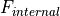.
(19)¶
Note
If both of the arguments are truthy, the argument which occurs in the method signature first has highest precedence. The internal forcing is only assigned to the
forcingattribute when called with default arguments.Examples
>>> from waterflow.flow1d.flowFE1d import Flow1DFE >>> from waterflow.utility import conductivityfunctions as condf >>> from waterflow.utility.fluxfunctions import richards_equation >>> from waterflow.utility.helper import initializer
Select soil 13, ‘loam’, from De Staringreeks [Strunk1979] and prepare the conductivity function with the soil parameters.
>>> s, *_ = condf.soilselector([13])[0] >>> kfun = initializer(condf.VG_conductivity, ksat=s.ksat, a=s.alpha, n=s.n)
Add states for a stationary no flow situation and check the
forcingattribute for the internal forcing values.>>> FE = Flow1DFE("Internal forcing example") >>> FE.set_systemfluxfunction(richards_equation, kfun=kfun) >>> FE.set_field1d(nodes=(-10, 0, 11)) >>> FE.set_initial_states([-i for i in range(11)]) >>> FE.set_gaussian_quadrature(3) >>> FE._internal_forcing() >>> FE.forcing array([0., 0., 0., 0., 0., 0., 0., 0., 0., 0., 0.]) >>> FE._internal_forcing(calcflux=True) >>> FE.fluxes array([0., 0., 0., 0., 0., 0., 0., 0., 0., 0., 0.])
Both arrays should consist of zeros because of the applied equilibrium situation with no flow over the boundaries.
-
_solve_initial_object()[source]¶ Calculation on first model input
Basic calculations on the input data for the first object, used as first entry in any of the model’s dataframes.
Notes
If
isinitialequalsTruethe boundaries of the model are checked, the internal forcing is calculated and the storage change function is updated, if present.Note
The values calculated by this method and included in the model’s dataframes as first entries not need to make any sense because the user can set any unrealistic combination of initial input.
-
_statedep_forcing()[source]¶ Calculation of state dependent forcing values
State dependent forcing values saved in
SspatfluxandSpointfluxare calculated. The local forcing matrices are populated and the total of both is accumulated to the global forcing matrix . Forcing values at the position of a Dirichlet boundary condition are set to zero. This method is called internally bydt_solve()to prepare for the next iteration.Notes
Calculations of the individual spatial fluxes
 are saved in
the local forcing matrix . The following two
components need to be calculated over the complete domain of the
system for the specific spatialflux. The Gaussian quadrature degree
is accounted for.
are saved in
the local forcing matrix . The following two
components need to be calculated over the complete domain of the
system for the specific spatialflux. The Gaussian quadrature degree
is accounted for.(20)¶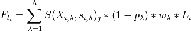
(21)¶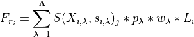
where the state argument 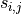 is calculated by linear interpolation as shown below:
(22)¶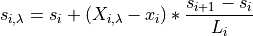
Calculations of the individual point fluxes
 are also saved
in its local forcing matrix . The following two
components need to be calculated at the position of the specific
pointflux:
are also saved
in its local forcing matrix . The following two
components need to be calculated at the position of the specific
pointflux:(23)¶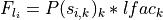
(24)¶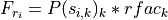
where the state argument is calculated by linear interpolation as shown below:
(25)¶
The local forcing matrix is populated as follows, this scheme is used for both the pointflux and the spatialflux calculation.
(26)¶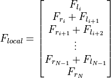
Examples
>>> from waterflow.flow1d.flowFE1d import Flow1DFE >>> FE = Flow1DFE("state dependent fluxes") >>> FE.set_field1d((-10, 0, 11)) >>> # Set initial states other than all zeros >>> FE.set_initial_states([-i for i in range(11)])
>>> # Define a state dependent pointflux function >>> def Spflux(s): ... return abs(np.sin(s)) * -0.1 >>> FE.add_pointflux(Spflux, -3.1)
>>> # Define a state dependent spatialflux function >>> def linear_s_extraction(x, s): ... return -0.001 * abs(x) - 0.001 * s >>> FE.add_spatialflux(linear_s_extraction)
>>> # Calculcate state dependent forcing (for next iteration) >>> FE._statedep_forcing() >>> # Local forcing matrix of Spflux >>> FE.Spointflux['Spflux'][1] array([ 0. , 0. , 0. , 0. , 0. , 0. , -0.0057844 , -0.05205958, 0. , 0. , 0. ]) >>> # Local forcing matrix of 'linear_s_extraction' >>> FE.Sspatflux['linear_s_extraction'][1] array([-0.0045, -0.008 , -0.006 , -0.004 , -0.002 , 0. , 0.002 , 0.004 , 0.006 , 0.008 , 0.0045])
-
_update_storage_change(prevstate, dt)[source]¶ Update states function and time step size of storage change function
The storage change function is implemented as a spatial state dependent flux function. Therefore, it needs to match its mandatory function signature as described in
add_spatialflux(). This method updates theprevstateanddtarguments by changing these default arguments of the storage change function so that the calling signature remains the same.- Parameters
prevstate (func) – Function that calculates the system’s states
 for a given
position
for a given
position  .
.dt (float or int) – Time step over which the storage change will be calculated.
Notes
The storage change function, if present, is stored in
Sspatflux. The calling signature may look as follows:(27)¶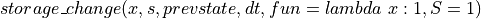
The 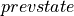 and 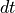 argument needs to be updated at every iteration and are set as default values so the storage change function can be called with the signature demanded by
add_spatialflux().
-
add_dirichlet_BC(value, where)[source]¶ Set boundary condition with fixed state
The Dirichlet boundary condition is implemented with this method. The boundary condition is saved in
BCs.- Parameters
value (int or float) – State value of the specific boundary
where (str) – Position where the boundary condition will be set. Choose from “west”, “left”, “down”, “east”, “right” or “up”. This argument is case insensitive.
Notes
Describe how the boundary condition is implemented. !!!!!!!!!!!!!
Examples
>>> from waterflow.flow1d.flowFE1d import Flow1DFE >>> FE = Flow1DFE("Dirichlet boundary conditions") >>> FE.set_field1d((-10, 0, 11)) >>> FE.BCs {} >>> FE.add_dirichlet_BC(-100, "Up") >>> FE.add_dirichlet_BC(0, "Down") >>> FE.BCs {'east': (-100, 'Dirichlet', -1), 'west': (0, 'Dirichlet', 0)}
Note
Note that a new boundary condition will overwrite an existing one without a warning.
-
add_neumann_BC(value, where)[source]¶ Set boundary condition with fixed flux
The Neumann boundary condition is implemented with this method. The boundary condition is saved in
BCs.- Parameters
value (int or float) – Flux value of the specific boundary
where (str) – Position where the boundary condition will be set. Choose from “west”, “left”, “down”, “east”, “right” or “up”. This argument is case insensitive.
Notes
Describe how the boundary condition is implemented. !!!!!!!!!!!!! also note that FE.set_field1d needs to be called for the _east attr
Examples
>>> from waterflow.flow1d.flowFE1d import Flow1DFE >>> FE = Flow1DFE("Neumann boundary conditions") >>> FE.set_field1d((-10, 0, 11)) >>> FE.BCs {} >>> FE.add_neumann_BC(-0.1, "right") >>> FE.BCs {'east': (-0.1, 'Neumann', -1)} >>> FE.add_neumann_BC(-0.5, "up") >>> FE.BCs {'east': (-0.5, 'Neumann', -1)} >>> FE.add_neumann_BC(-0.8, "West") >>> FE.BCs {'east': (-0.5, 'Neumann', -1), 'west': (-0.8, 'Neumann', 0)}
Note
Note that a new boundary condition will overwrite an existing one without a warning. This method will allow both boundaries to be of type Neumann but remember that this won’t be useful because of the infinite amount of solutions in such a situation.
-
add_pointflux(rate, pos, name=None)[source]¶ Add a pointflux to the system
Pointflux values and pointflux functions are accepted. Multiple point fluxes can be combined in a list. Scalar pointflux values are accumulated to its local matrix
 at the correct indices.
The state dependent pointflux functions are prepared and saved for
calculation in a context where is available.
at the correct indices.
The state dependent pointflux functions are prepared and saved for
calculation in a context where is available.- Parameters
rate (float, int, list or func) –
Scalar pointflux value(s).
Pointflux function(s) of the form 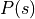.
pos (float, int or list) – Position(s) of the pointflux value(s)/function(s).
name (str, default is None) – Name of the pointflux. If omitted, a unique key is generated or rate.__name__ is used in case of a function argument.
Notes
is the index of the right node that is nearest the position of the pointflux and is calculated by
searchsorted(). 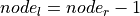, which is the left node that is most near the position of the pointflux. and represent the fractions of the pointflux
that contribute to the nearest left and right node repectively.(28)¶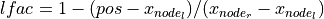
(29)¶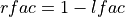
In case of a scalar pointflux the distributed values are assigned to its local forcing array at the correct nodal positions and saved in
pointflux. See the formulas below:(30)¶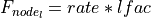
(31)¶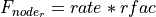
For the state dependent pointflux function the calculated values of , ,
, and are
saved in Spointfluxin addition to the state dependent pointflux function itself and an empty local forcing array.Warning
Multiple functions, unlike scalar point fluxes, should be implemented separately and cannot be combined in a list argument.
Examples
>>> from waterflow.flow1d.flowFE1d import Flow1DFE >>> FE = Flow1DFE("Point fluxes") >>> FE.set_field1d((-10, 0, 11))
>>> # Add a scalar pointflux >>> FE.add_pointflux(-0.003, -5.5, 'pflux') >>> FE.pointflux {'pflux': [array([ 0. , 0. , 0. , 0. , -0.0015, -0.0015, 0. , 0. , 0. , 0. , 0. ])]}
>>> # Define a state dependent point flux function >>> def Spflux(s): ... return abs(np.sin(s)) * -0.1 >>> FE.add_pointflux(Spflux, -3.1) >>> FE.Spointflux {'Spflux': [(<function Spflux at 0x...>, (6, 7, 0.10000000000000009, 0.8999999999999999)), array([0., 0., 0., 0., 0., 0., 0., 0., 0., 0., 0.])]}
-
add_spatialflux(q, name=None)[source]¶ Add a spatialflux to the system
Spatial fluxes of several types are accepted by this method. Direct calculation of the forcing values is performed where possible. State dependent forcing functions will be calculated in a different context. The storage change function for the simulation of a transient system should be implemented here.
- Parameters
q (int, float, `list or func) –
Scalar spatial flux value applied over the complete domain.
Sequence of different spatial flux values for every nodal position.
Positional and/or state dependent spatial flux function.
Storage change function for a transient simulation.
name (str, default is None) – Name of the pointflux. If omitted, a unique key is generated or q.__name__ is used in case of a function argument.
Notes
When
qis a scalar or sequence like argument the local forcing array is calculated by multiplication with the corresponding lengths and will be saved inspatflux.(32)¶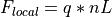
If
qis a function of position, , the flux is
calculated per segment. Below the exact definition of this calculation
is presented, taking into account the Gaussian quadrature degree
.
, the flux is
calculated per segment. Below the exact definition of this calculation
is presented, taking into account the Gaussian quadrature degree
.(33)¶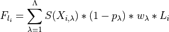
(34)¶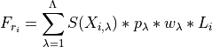
After the calculation of the distribution towards the nearest nodes the local forcing matrix is populated and the will be saved in
spatflux.(35)¶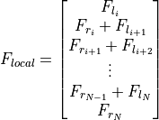
In the case of
qbeing a function of position and state, 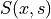, the function will be assigned toSspatfluxfor later processing in a context where is available.qcan have four arguments, 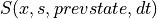. This is a special case reserved for the storage change function. The function signature may have keyword arguments but they need to be optional having a default argument. See a possible definition of a storage change function,storage_change(), that can be used for both saturated and unsaturated conditions depending on its default keyword arguments. The storage change function is saved inSspatfluxand will carry the default name ‘storage_change’, see the last example.Note
For spatial state dependent flux functions the function signature will always look like this whether there is a positional dependency or not. This is needed to distinguish between the
and arguments.Examples
>>> from waterflow.flow1d.flowFE1d import Flow1DFE >>> from waterflow.utility.fluxfunctions import storage_change >>> FE = Flow1DFE("spatial fluxes") >>> FE.set_field1d((-10, 0, 11))
>>> # Add a scalar spatialflux >>> FE.add_spatialflux(-0.001, 'Root extraction') >>> FE.spatflux {'Root extraction': [array([-0.0005, -0.001 , -0.001 , -0.001 , -0.001 , -0.001 , -0.001 , -0.001 , -0.001 , -0.001 , -0.0005])]}
>>> # Add position dependent spatial flux function >>> def linear_extraction(x): ... return -0.001 * abs(x) >>> FE.add_spatialflux(linear_extraction) >>> FE.spatflux {'Root extraction': [array([-0.0005, -0.001 , -0.001 , -0.001 , -0.001 , -0.001 , -0.001 , -0.001 , -0.001 , -0.001 , -0.0005])], 'linear_extraction': [array([-0.00475, -0.009 , -0.008 , -0.007 , -0.006 , -0.005 , -0.004 , -0.003 , -0.002 , -0.001 , -0.00025])]}
>>> # Add position and state dependent spatial flux function >>> def linear_s_extraction(x, s): ... return -0.001 * x - 0.001 * s >>> FE.add_spatialflux(linear_s_extraction, 'Sfunc') >>> # Note that the local forcing array will always be empty and is only initialized >>> FE.Sspatflux {'Sfunc': [<function linear_s_extraction at 0x...>, array([0., 0., 0., 0., 0., 0., 0., 0., 0., 0., 0.])]}
>>> # The storage change function is imported and passed to the model >>> # note that the name argument is ignored. >>> FE.add_spatialflux(storage_change, name='My_storage_change') >>> FE.Sspatflux {'Sfunc': [<function linear_s_extraction at 0x...>, array([0., 0., 0., 0., 0., 0., 0., 0., 0., 0., 0.])], 'storage_change': [<function storage_change at 0x...>, array([0., 0., 0., 0., 0., 0., 0., 0., 0., 0., 0.])]}
-
calcbalance(print_=False, invert=True)[source]¶ Calculate the water balance for the system
The water balance values are calculated at every position in the domain and will be saved to
df_balance. The summary of the water balance, which is the sum of all relevant columns, is saved indf_balance_summary.- Parameters
print_ (bool, default is
False) – Printdf_balance_summaryto the console.invert (bool, default is
True) – Mirrordf_balancew.r.t. the x-axis.
Notes
The external fluxes, 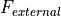, are the sum of all point and spatial fluxes.
(36)¶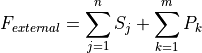
The calculation of the pointflux, 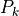, depends on its nature. If the pointflux depends on position only, the accumulation is straightforward. When the pointflux is dependent on the state of the the system, the distribution towards the surrounding nodes needs to be calculated before values can be accumulated. The distribution to the nearest nodes is calculated as follows:
(37)¶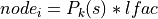
(38)¶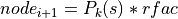
where
equals the state at the position of the pointflux
which is calculated by linear interpolation between the nearest nodes.
The calculation of the fractions, that distribute the flux,
and are described in
add_pointflux().For the calculation of the spatial flux, 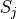, a similar distinction exists. If the spatial flux is not dependend on state, straightforward addition takes place. When there is a state dependency, distributions towards the nodes is calculated as described in
_statedep_forcing(). This calculation accounts for the selectedgauss_degreeand the state argument is linearly interpolated between the neareast nodes.The total forcing in the water balance is the sum of the internal forcing as described in
_internal_forcing()and the external forcing.(39)¶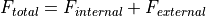
The top and bottom values in 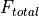 are corrected for the flow over the boundaries. The flow over the boundaries is calculated as the difference of - 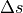 at those boundary nodes.
The net flux is calculated as follows:
(40)¶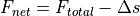
Where represents the storage change between iterations at every node in the domain.
Note
Although the storage change is entered into the model as an external flux, in the calculation of the water balance this term is handled as a separate flux which is not included in the term.
Examples
>>> from waterflow.flow1d.flowFE1d import Flow1DFE >>> from waterflow.utility import conductivityfunctions as condf >>> from waterflow.utility import fluxfunctions as fluxf >>> from waterflow.utility.helper import initializer
Select soil 13, ‘loam’, from De Staringreeks [Strunk1979] and prepare the conductivity function and theta-h relation with the soil parameters. These functions are the arguments to the fluxfunction and the storage change function repectively.
>>> s, *_ = condf.soilselector([13])[0] >>> theta_h = initializer(condf.VG_pressureh, theta_r=s.t_res, ... theta_s=s.t_sat, a=s.alpha, n=s.n) >>> kfun = initializer(condf.VG_conductivity, ksat=s.ksat, a=s.alpha, n=s.n) >>> storage_change = initializer(fluxf.storage_change, fun=theta_h)
>>> FE = Flow1DFE("Calculate water balance") >>> FE.set_systemfluxfunction(fluxf.richards_equation, kfun=kfun) >>> FE.set_field1d(nodes=(-10, 0, 11)) >>> FE.add_dirichlet_BC(0.0, 'west') >>> # Constant boundary flow of 0.3 cm/d out of the system >>> FE.add_neumann_BC(-0.3, 'east') >>> # theta_h function needs to be added manually to be included in the water balance >>> FE.tfun = theta_h >>> # Extraction of 0.001 cm/d over the complete domain >>> FE.add_spatialflux(-0.001, 'extraction') >>> # Add storage change function >>> FE.add_spatialflux(storage_change) >>> # Solve the system for one time step (dt=0.01 d) >>> iters = FE.dt_solve(dt=0.01) >>> FE.calcbalance() >>> FE.df_balance nodes spat-extraction storage_change internal all-spatial all-points all-external net fluxes 0 0.0 -0.0005 0.144730 -0.144730 -0.0005 0.0 -0.0005 0.000000e+00 0.155770 1 -1.0 -0.0010 0.266555 -0.266555 -0.0010 0.0 -0.0010 -4.663325e-12 -0.109784 2 -2.0 -0.0010 0.222706 -0.222706 -0.0010 0.0 -0.0010 -2.797818e-12 -0.331490 3 -3.0 -0.0010 0.182558 -0.182558 -0.0010 0.0 -0.0010 -6.783463e-14 -0.513048 4 -4.0 -0.0010 0.145754 -0.145754 -0.0010 0.0 -0.0010 1.635247e-12 -0.657801 5 -5.0 -0.0010 0.112096 -0.112096 -0.0010 0.0 -0.0010 1.979528e-12 -0.768897 6 -6.0 -0.0010 0.081552 -0.081552 -0.0010 0.0 -0.0010 1.637579e-12 -0.849449 7 -7.0 -0.0010 0.054287 -0.054287 -0.0010 0.0 -0.0010 1.292744e-12 -0.902736 8 -8.0 -0.0010 0.030765 -0.030765 -0.0010 0.0 -0.0010 1.127098e-12 -0.932501 9 -9.0 -0.0010 0.012078 -0.012078 -0.0010 0.0 -0.0010 1.573075e-12 -0.943580 10 -10.0 -0.0005 0.002068 -0.002068 -0.0005 0.0 -0.0005 0.000000e+00 -0.945148 >>> FE.df_balance_summary spat-extraction -1.000000e-02 storage_change 1.255148e+00 internal -1.255148e+00 all-spatial -1.000000e-02 all-points 0.000000e+00 all-external -1.000000e-02 net 1.716294e-12 dtype: float64
-
dataframeify(invert)[source]¶ Write current static model to dataframe
Save the current model results to
df_states.- Parameters
invert (bool) – Mirror
df_statesw.r.t. the x-axis.
Notes
At least, lengths, nodes, states and the internal forcing are written to the dataframe.
Examples
>>> from waterflow.flow1d.flowFE1d import Flow1DFE >>> from waterflow.utility import conductivityfunctions as condf >>> from waterflow.utility import fluxfunctions as fluxf >>> from waterflow.utility.helper import initializer
Select soil 13, ‘loam’, from De Staringreeks [Strunk1979] and prepare the conductivity function and theta-h relation with the soil parameters. These functions are the arguments to the fluxfunction and the storage change function repectively.
>>> s, *_ = condf.soilselector([13])[0] >>> theta_h = initializer(condf.VG_pressureh, theta_r=s.t_res, ... theta_s=s.t_sat, a=s.alpha, n=s.n) >>> kfun = initializer(condf.VG_conductivity, ksat=s.ksat, a=s.alpha, n=s.n) >>> storage_change = initializer(fluxf.storage_change, fun=theta_h)
>>> FE = Flow1DFE("static df_states dataframe") >>> FE.set_systemfluxfunction(fluxf.richards_equation, kfun=kfun) >>> FE.set_field1d(nodes=(-10, 0, 11)) >>> FE.add_dirichlet_BC(0.0, 'west') >>> # Constant boundary flow of 0.3 cm/d out of the system >>> FE.add_neumann_BC(-0.3, 'east') >>> # theta_h add manually to be included in the dataframe >>> FE.tfun = theta_h >>> # Add storage change function >>> FE.add_spatialflux(storage_change) >>> # Solve the system for one time step (dt=0.01 d) >>> iters = FE.dt_solve(dt=0.01) >>> FE.dataframeify(invert=True) >>> FE.df_states lengths nodes states moisture conductivities storage_change internal_forcing 0 0.5 0.0 -9.304032 0.416865 5.936014 0.144618 0.155382 1 1.0 -1.0 -8.278454 0.417344 6.220225 0.266340 -0.266340 2 1.0 -2.0 -7.295883 0.417781 6.519720 0.222509 -0.222509 3 1.0 -3.0 -6.345835 0.418182 6.840203 0.182383 -0.182383 4 1.0 -4.0 -5.419426 0.418549 7.189191 0.145605 -0.145605 5 1.0 -5.0 -4.509093 0.418885 7.577188 0.111975 -0.111975 6 1.0 -6.0 -3.608378 0.419190 8.020009 0.081460 -0.081460 7 1.0 -7.0 -2.711757 0.419462 8.544065 0.054224 -0.054224 8 1.0 -8.0 -1.814469 0.419698 9.201041 0.030729 -0.030729 9 1.0 -9.0 -0.912220 0.419888 10.126956 0.012064 -0.012064 10 0.5 -10.0 0.000000 0.420000 12.980000 0.002066 0.951906
-
dt_solve(dt, maxiter=500, threshold=0.001)[source]¶ Solve the system for one specific time step
Performs the Newton-Raphson method, [New64], for a solution to the system of equations.
- Parameters
dt (int or float) – Time step which will be solved for.
maxiter (int) – Maximum number of iterations in which the system should converge to a solution.
threshold (float, default is 1e-3) –
Threshold for conversion, the system has converged when the definition below is satisfied:
(41)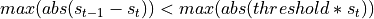
Notes
Note
This method may also be used for stationary systems in which no time step value is given. Any value of
dtcan be passed because of the method being independent from this argument in such a case.Warning
Time step
dtshould not be to large. Insolve()a more quantitative description of time step selection is described.Procedure
Check for proper boundary conditions (
_check_boundaries()).Update states function and time step size of storage change function if system is transient (
_update_storage_change()).Check if current iteration does not exceed
maxiter, otherwise return.Collect all forcing in
forcing.Aggregation of state independent forcing (
_aggregate_forcing()).Calculate the system’s internal forcing (
_internal_forcing()).Calculation of state dependent forcing values (
_statedep_forcing()).
Build the jacobian matrix (
_CMAT()).Newton-Raphson iteration [New64].
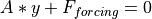 is solved for
 (
(solve()).- is accumulated to
states.
Repeat step 3.
Check for convergence
threshold, if not satisfied proceed with next iteration from step 3.
- Returns
Number of iterations until system convergence or
maxiter.- Return type
int
Examples
>>> from waterflow.flow1d.flowFE1d import Flow1DFE >>> from waterflow.utility import conductivityfunctions as condf >>> from waterflow.utility import fluxfunctions as fluxf >>> from waterflow.utility.helper import initializer
Select soil 13, ‘loam’, from De Staringreeks [WostenVDS01] and prepare the conductivity function and theta-h relation with the soil parameters. These functions are the arguments to the fluxfunction and the storage change function repectively.
>>> s, *_ = condf.soilselector([13])[0] >>> theta_h = initializer(condf.VG_pressureh, theta_r=s.t_res, ... theta_s=s.t_sat, a=s.alpha, n=s.n) >>> kfun = initializer(condf.VG_conductivity, ksat=s.ksat, a=s.alpha, n=s.n) >>> storage_change = initializer(fluxf.storage_change, fun=theta_h)
>>> FE = Flow1DFE("Solve for one time step") >>> FE.set_systemfluxfunction(fluxf.richards_equation, kfun=kfun) >>> FE.set_field1d(nodes=(-10, 0, 11)) >>> FE.add_dirichlet_BC(0.0, 'west') >>> # Constant boundary flow of 0.3 cm/d out of the system >>> FE.add_neumann_BC(-0.3, 'east') >>> # Solve the stationary system, independent or dt. >>> iterations = FE.dt_solve(dt=0.0) >>> iterations 3 >>> FE.states array([ 0. , -1.02794815, -2.05972769, -3.09448033, -4.13189871, -5.17183029, -6.21419211, -7.25893958, -8.30605208, -9.35552524, -10.40736646])
>>> # Add storage change function to make the system transient >>> FE.add_spatialflux(storage_change) >>> # Change eastern boundary to drive a change in the system >>> FE.add_neumann_BC(-0.4, 'east') >>> # solve for 0.01 days >>> iterations = FE.dt_solve(dt=0.01) >>> iterations 2 >>> FE.states array([ 0. , -1.0353111 , -2.07549983, -3.1195156 , -4.16702367, -5.21790586, -6.27215519, -7.32983969, -8.39108809, -9.45608494, -10.52507089])
-
remove_BC(*args)[source]¶ Remove boundary conditions
Calling this method with default arguments will clear all boundary conditions set. To clear a specific boundary condition the name needs to be passed explicitly.
- Parameters
*args (str, optional.) – The positional arguments should contain the name of the boundary conditions as saved in
BCs. This can be “west” or “east”.- Raises
KeyError – This exception is raised when
*argscontains an invalid boundary condition name.
Notes
Note
This is the safe way to remove the boundary conditions because it will also handle and reset the
_westand_eastattributes which are associated with the implementation of the boundary conditions in the numerical scheme.Examples
>>> from waterflow.flow1d.flowFE1d import Flow1DFE >>> FE = Flow1DFE("Boundary condition removal") >>> FE.set_field1d((-10, 0, 11)) >>> FE.add_dirichlet_BC(-100, "up") >>> FE.add_neumann_BC(0.0, "down") >>> FE.BCs {'east': (-100, 'Dirichlet', -1), 'west': (0.0, 'Neumann', 0)} >>> FE.remove_BC("right") Traceback (most recent call last): ... KeyError: 'No boundary named right.' >>> FE.remove_BC("west") >>> FE.BCs {'east': (-100, 'Dirichlet', -1)} >>> FE.remove_BC() >>> FE.BCs {}
-
remove_pointflux(*args)[source]¶ Remove point fluxes
Remove all or a specific point fluxes. When this method is called with default arguments all point fluxes will be removed from both
pointfluxandSpointflux.- Parameters
*args (str, optional) – Name(s) of specific point fluxes.
- Raises
KeyError – Will be raised when the name of the pointflux does not exists.
Examples
>>> from waterflow.flow1d.flowFE1d import Flow1DFE >>> FE = Flow1DFE("Point flux removal") >>> FE.set_field1d((-10, 0, 11))
>>> # Add a scalar pointflux >>> FE.add_pointflux(-0.001, -3.3, 'Point1') >>> # Add an other >>> FE.add_pointflux(-0.002, -5.5, 'Point2') >>> # Add a third >>> FE.add_pointflux(-0.003, -7.7, 'Point3') >>> # Check for all the currently available pointflux names >>> FE.pointflux.keys() dict_keys(['Point1', 'Point2', 'Point3']) >>> def Spflux(s): ... return abs(np.sin(s)) * -0.1 >>> FE.add_pointflux(Spflux, -6.6) >>> FE.Spointflux.keys() dict_keys(['Spflux'])
>>> # Specific removal of the point fluxes >>> FE.remove_pointflux('Point1', 'Point3') >>> FE.pointflux.keys() dict_keys(['Point2']) >>> # Use an incorrect name >>> FE.remove_pointflux("Point4") Traceback (most recent call last): ... KeyError: "'Point4' is not a pointflux." >>> # Remove the remaining point fluxes >>> FE.remove_pointflux() >>> FE.pointflux {} >>> FE.Spointflux {}
-
remove_spatialflux(*args)[source]¶ Remove spatial fluxes
Remove all or a specific spatial fluxes. When this method is called with default arguments all spatial fluxes will be removed from both
spatfluxandSspatflux.- Parameters
*args (str, optional) – Name(s) of specific spatial fluxes.
- Raises
KeyError – Will be raised when the name of the spatialflux does not exists.
Examples
>>> from waterflow.flow1d.flowFE1d import Flow1DFE >>> from waterflow.utility.fluxfunctions import storage_change >>> FE = Flow1DFE("Spatial flux removal") >>> FE.set_field1d((-10, 0, 11))
>>> # Add a scalar spatialflux >>> FE.add_spatialflux(-0.001, 'Spat1') >>> # Add an other >>> FE.add_spatialflux(-0.002, 'Spat2') >>> # Add a third >>> FE.add_spatialflux(-0.003, 'Spat3') >>> # Check for all the currently available spatialflux names >>> FE.spatflux.keys() dict_keys(['Spat1', 'Spat2', 'Spat3']) >>> # Add the storage change function >>> FE.add_spatialflux(storage_change) >>> # Check which spatial state dependent flux function is saved >>> FE.Sspatflux.keys() dict_keys(['storage_change'])
>>> # Specific removal of the spatial fluxes >>> FE.remove_spatialflux("Spat1", "Spat2") >>> FE.spatflux.keys() dict_keys(['Spat3']) >>> # Use an incorrect name >>> FE.remove_spatialflux("Spat4") Traceback (most recent call last): ... KeyError: "'Spat4' is not a spatialflux." >>> # Remove the remaining spatial fluxes >>> FE.remove_spatialflux() >>> FE.spatflux {} >>> FE.Sspatflux {}
-
save(savepath=None, dirname=None)[source]¶ Save model data to disk
The transient dataframes created with
transient_dataframeify()and the model summary as created withsummary()will be saved to disk by this method.- Parameters
savepath (
str, default isOUTPUT_DIR) – A base path to which runs will be saved.dirname (
str, default is a chronological name) – Name of save directory that is appended to savepath.
Notes
All dataframes of the form
dft_<name>, if populated, are written to disk in a .xlsx extension. The model summary is saved asid_with a .txt extension.Warning
Data that already exists in the target directory will be overwritten with new data. Prevent this by selecting a new directory name or set
dirname=Noneto automatically generate a chronological directory name which is always unique.
-
set_field1d(nodes, degree=1)[source]¶ Initialize the system’s discretization
statesandforcingare initialized with zeros. The Gaussian quadraturegauss_degreeis set and the system’s discretization characteristics are calculated with_FE_precalc().- Parameters
nodes (tuple or list or numpy.ndarray) – A tuple of the form (start, end, number of nodes) for a linearly spaced domain or a sequence of nodes that contains the nodal positions explicitly.
degree (int, default is 1) – Set the Gaussian quadrature degree, this is equivalent to the
set_gaussian_quadrature()method.
Notes
Warning
Make sure that the positions of the nodes increase towards the right of the domain.
Examples
>>> from waterflow.flow1d.flowFE1d import Flow1DFE >>> from waterflow.utility.spacing import biasedspacing
Linear nodal spacing with a non-default Gaussian degree.
>>> FE = Flow1DFE("Several spacings") >>> FE.set_field1d((-10, 0, 11), degree=3) >>> FE.nodes array([-10., -9., -8., -7., -6., -5., -4., -3., -2., -1., 0.]) >>> FE._xgauss (0.1127016653792583, 0.5, 0.8872983346207417)
Unstructured nodes using the
biasedspacing()function.>>> unstructured_nodes = biasedspacing(numnodes=11, power=4, lb=-1, rb=0, maxdist=2, length=10) >>> FE.set_field1d(unstructured_nodes) >>> FE.nodes array([-10. , -9.61405656, -9.29864794, -8.94730706, -8.54868046, -8.0844499 , -7.12803197, -6. , -4. , -2. , 0. ])
-
set_gaussian_quadrature(degree=1)[source]¶ Calculates Gaussian quadrature roots and weights
The values calculated with this method are stored in the object’s
_xgaussand_wgaussattributes. The absolute positions of the Gaussian quadrature points in the domain are calculated and saved inxintegration.- Parameters
degree (int, default is 1) – Number of points used in the Gaussian quadrature procedure.
Notes
The integration points 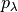 for the Gaussian quadrature method are obtained by finding the roots of the Legendre polynomial of degree
.(42)¶
The corresponding weights 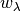 are calculated with the following closed form equation.
(43)¶
A full description of the theory behind this Gaussain quadrature method is documented in [Strunk1979].
Examples
>>> from waterflow.flow1d.flowFE1d import Flow1DFE >>> FE = Flow1DFE("Gaussian quadrature") >>> FE.set_field1d((-10, 0, 11)) >>> FE.set_gaussian_quadrature(2) >>> # positions >>> FE._xgauss (0.21132486540518708, 0.7886751345948129) >>> # weights >>> FE._wgauss (0.4999999999999999, 0.5000000000000002) >>> # check shape of xintegration >>> np.array(FE.xintegration).shape (10, 2)
-
set_initial_states(states)[source]¶ Set the initial states
Although the main purpose of this method is to set the initial states it can be used to manipulate the states at any given point in time. The states are written to
states.- Parameters
states (int or float or list or numpy.ndarray) – Set the states to an uniform value or vary the states with a sequence like argument.
Notes
Note
Note that the states can only be set when the discretization of the system is known.
Examples
Set the initial states of the system or use the default setting.
>>> from waterflow.flow1d.flowFE1d import Flow1DFE >>> FE = Flow1DFE("Setting states") >>> FE.set_field1d((-10, 0, 11)) >>> FE.states array([0., 0., 0., 0., 0., 0., 0., 0., 0., 0., 0.]) >>> FE.set_initial_states([-i for i in range(11)]) >>> FE.states array([ 0., -1., -2., -3., -4., -5., -6., -7., -8., -9., -10.])
-
set_systemfluxfunction(function, **kwargs)[source]¶ Implement the governing flow equation
The
systemfluxfuncis set with the governing flow equation.- Parameters
function (func) – Flow equation that takes position, state and gradient as its arguments respectively.
**kwargs (keyword arguments) – Extra arguments for the flow equation which are implemented as defaults so that the calling signature of the flow equation remains the same.
Examples
>>> from waterflow.flow1d.flowFE1d import Flow1DFE >>> from waterflow.utility import fluxfunctions as fluxf >>> from waterflow.utility import conductivityfunctions as condf >>> from waterflow.utility.helper import initializer
Implement the Richards equation for unsturated flow, herein the Van Genuchten conductivity function is used, [Strunk1979]. Soil 13, ‘loam’, from De Staringreeks [Strunk1979] is selected. See
richards_equation()for the full definition of the fluxfunction.>>> s, *_ = condf.soilselector([13])[0] >>> kfun = initializer(condf.VG_conductivity, ksat=s.ksat, a=s.alpha, n=s.n) >>> richards = fluxf.richards_equation >>> FErichard = Flow1DFE("Flow equations") >>> FErichard.set_systemfluxfunction(richards, kfun=kfun)
For saturated flow the Darcy equation with a constant saturated conductivity can be used. [Strunk1979]. See
darcy()for the full definition of the fluxfunction.>>> darcy = fluxf.darcy >>> FEdarcy = Flow1DFE("Flow equations") >>> FEdarcy.set_systemfluxfunction(darcy, ksat=s.ksat)
-
solve(dt=0.001, dt_min=1e-05, dt_max=0.5, end_time=1, maxiter=500, dtitlow=1.5, dtithigh=0.5, itermin=5, itermax=10, threshold=0.001, verbosity=True)[source]¶ Solve the system for an arbitrary period of time
The outer loop that progresses the model over time by calling
dt_solve()sequentially untilend_timeis reached. Each sequential call todt_solve()will produce a new solved object that holds the current model states at the specific time. This data will be saved tosolve_data. The total time that it takes for this method to converge to a solution atend_timeis saved inruntime.- Parameters
dt (int or float) – Initial time step.
dt_min (int or float, default is 1e-5) – Minimum time step size for which will be solved.
dt_max (int or float, default is 0.5) – Maximum time step size for which will be solved.
end_time (int or float, default is 1) – Total period of time for which will be solved.
maxiter (int, default is 500) – Maximum number of iterations in which the system should converge to a solution.
dtitlow (float, default is 1.5, 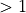) – Multiplier for increasing
dtfor the next time step.dtithigh (float, default is 0.5, 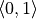) – Multiplier for decreasing
dtfor the next time step.itermin (int, default is 5, 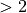) – Maximum number of iterations at which the time step
dtwill be multiplied with its increasing multiplierdtitlowfor the next time step.itermax (int, default is 10, 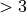) –
Minimum number of iterations at which the time step
dtwill be multiplied with its decreasing multiplierdtithighfor the next time step.Warning
itermin<itermin. See the notes below for a precise description of the variable time step selection procedure.threshold (float, default is 1e-3) –
Threshold for conversion, the system has converged when the definition below is satisfied:
(44)
verbosity (bool, default is True) – Be descriptive about the solve process.
Notes
Note
This method may also be used for stationary systems in which no time step value is given. The default value for
dtcan be passed because of the method being independent from this argument in such a case.Variable time step selection
The number of iterations, Niter, returned by
dt_solve()will decide how the time stepdtwill be altered for the next call todt_solve(). See the description below:If Niter >
maxiter, thendt*dtithigh.If Niter <
maxiter, then check for the following:If Niter <=
itermin, thendt*dtitlow.If Niter >=
itermax, thendt*dtithigh.If
itermin< Niter <itermax, thendt.
Note that
dtcannot become smaller thandt_minor larger thandt_max.Warning
The size of the last time step is not determined by this procedure but will be calculated as difference between the current time and the
end_timeso the model will have its last solution on itsend_timeexactly.Examples
>>> from waterflow.flow1d.flowFE1d import Flow1DFE >>> from waterflow.utility import conductivityfunctions as condf >>> from waterflow.utility import fluxfunctions as fluxf >>> from waterflow.utility.helper import initializer
Select soil 13, ‘loam’, from De Staringreeks [Strunk1979] and prepare the conductivity function and theta-h relation with the soil parameters. These functions are the arguments to the fluxfunction and the storage change function repectively.
>>> s, *_ = condf.soilselector([13])[0] >>> theta_h = initializer(condf.VG_pressureh, theta_r=s.t_res, ... theta_s=s.t_sat, a=s.alpha, n=s.n) >>> kfun = initializer(condf.VG_conductivity, ksat=s.ksat, a=s.alpha, n=s.n) >>> storage_change = initializer(fluxf.storage_change, fun=theta_h)
>>> FE = Flow1DFE("Solve for a period of time") >>> FE.set_systemfluxfunction(fluxf.richards_equation, kfun=kfun) >>> FE.set_field1d(nodes=(-10, 0, 11)) >>> FE.add_dirichlet_BC(0.0, 'west') >>> FE.add_neumann_BC(-0.3, 'east') >>> FE.add_spatialflux(-0.001, 'Extraction') >>> FE.solve(verbosity=False) >>> FE.solve_data.keys() dict_keys(['solved_objects', 'time', 'dt', 'iter']) >>> # Solving the stationary system will call dt_solve only once. The >>> # result is the initial object and the solved one. >>> FE.solve_data['solved_objects'] [Flow1DFE(Solve for a period of time), Flow1DFE(Solve for a period of time)]
>>> # Make the system transient >>> FE.add_spatialflux(storage_change) >>> # Change the boundary to drive a change in the currently >>> # stationary solution. >>> FE.add_neumann_BC(-0.4, 'east') >>> FE.solve(verbosity=False, end_time=0.1) >>> # This will now return a sequence of solved objects at specific times. >>> FE.solve_data['solved_objects'] [Flow1DFE(Solve for a period of time), Flow1DFE(Solve for a period of time), Flow1DFE(Solve for a period of time), Flow1DFE(Solve for a period of time), Flow1DFE(Solve for a period of time), Flow1DFE(Solve for a period of time), Flow1DFE(Solve for a period of time), Flow1DFE(Solve for a period of time), Flow1DFE(Solve for a period of time), Flow1DFE(Solve for a period of time), Flow1DFE(Solve for a period of time)]
-
states_to_function()[source]¶ Prepare one-dimensional interpolation function
One-dimensional piecewise linearly interpolated function which returns the system’s states and is continiously defined on the domain
nodes.- Returns
Function that calculates the system’s states for a given position.
- Return type
functools.partial
Notes
The main purpose of this method is to allow for Gaussian quadrature calculations which require state values at specific positions between the system’s
nodes. This method also provides a tool for plotting at arbitrary positions within the domain.Examples
>>> from waterflow.flow1d.flowFE1d import Flow1DFE >>> FE = Flow1DFE("Continiously defined states") >>> FE.set_field1d((-10, 0, 11)) >>> FE.set_initial_states([-i for i in range(11)]) >>> continious_states = FE.states_to_function() >>> # On a boundary node >>> continious_states(0) -10.0 >>> # In between two nodes >>> continious_states(-8.5) -1.5 >>> # multiple results at once >>> continious_states([-0.2 * i for i in range(6)]) array([-10. , -9.8, -9.6, -9.4, -9.2, -9. ])
Warning
Be aware that the function does not raise an exception but returns the value of the nearest boundary when a position outside of the domain is given as argument.
-
summary(show=True, save=False, path=None)[source]¶ Description of the object
Subsequent calls will update the model description if adaptations to the model were made.
- Parameters
show (bool, default is True) – Print object description to the console.
save (bool, default is False) – Save object description to disk.
path (str, default is None) – Full path of a directory to which will be saved. This argument is mandatory if
save=True.
Notes
The description of the model is saved as
id_with a`.txt` extension. The string version of the description is also available viasummarystring.Examples
>>> from waterflow.flow1d.flowFE1d import Flow1DFE >>> from waterflow.utility import conductivityfunctions as condf >>> from waterflow.utility import fluxfunctions as fluxf >>> from waterflow.utility.helper import initializer
Select soil 13, ‘loam’, from De Staringreeks [Strunk1979] and prepare the conductivity function and theta-h relation with the soil parameters. These functions are the arguments to the fluxfunction and the storage change function repectively.
>>> s, *_ = condf.soilselector([13])[0] >>> theta_h = initializer(condf.VG_pressureh, theta_r=s.t_res, ... theta_s=s.t_sat, a=s.alpha, n=s.n) >>> kfun = initializer(condf.VG_conductivity, ksat=s.ksat, a=s.alpha, n=s.n) >>> storage_change = initializer(fluxf.storage_change, fun=theta_h)
>>> FE = Flow1DFE("static df_states dataframe") >>> FE.set_field1d(nodes=(-10, 0, 11)) >>> FE.set_systemfluxfunction(fluxf.richards_equation, kfun=kfun) >>> FE.add_dirichlet_BC(0.0, 'west') >>> # Constant boundary flow of 0.3 cm/d out of the system >>> FE.add_neumann_BC(-0.3, 'east') >>> # theta_h add manually to be included in the dataframe >>> FE.tfun = theta_h >>> # add spatial flux >>> FE.add_spatialflux(-0.001, 'extraction') >>> # Add storage change function >>> FE.add_spatialflux(storage_change) >>> # Solve the system for one time step (dt=0.01 d) >>> iters = FE.dt_solve(dt=0.01) >>> FE.summary() Id: static df_states dataframe System length: 10.0 Number of nodes: 11 Gauss degree: 1 kfun: VG_conductivity tfun: VG_pressureh BCs: west value: 0.0 and of type Dirichlet, east value: -0.3 and of type Neumann Spatflux: extraction, storage_change spat-extraction -1.000000e-02 storage_change 1.255148e+00 internal -1.255148e+00 all-spatial -1.000000e-02 all-points 0.000000e+00 all-external -1.000000e-02 net 1.716294e-12
-
transient_dataframeify(print_times=None, include_maxima=True, nodes=None, invert=True)[source]¶ Combine the static dataframes to a transient collection
This method will build the following dataframes:
dft_solved_times(),dft_states,dft_balance,dft_balance_summary.Generation of
dft_print_timesanddft_nodesdepends on theprint_timesandnodesarguments.- Parameters
print_times (int, list or numpy.ndarray) – Number of linearly spaced print times, or sequence of specific print times.
include_maxima (bool) – Include both endpoints in the dataframe.
nodes (list or numpy.ndarray) – Positional values of the nodes that will be tracked over time.
invert (bool) – Mirror the built dataframes w.r.t. the x-axis.
Notes
The default behaviour is to generate the dataframes for the times at which the model has been solved. These times are selected by the
solve()method and saved indft_solved_times. Whenprint_times != None, the collection of the static dataframes will be built at the new print times. This requires the model to calculate new model objects. The calculations are done from the nearest known object that was solved for in terms of time (dft_solved_times) and will be saved indft_print_times.Examples
>>> from waterflow.flow1d.flowFE1d import Flow1DFE >>> from waterflow.utility import conductivityfunctions as condf >>> from waterflow.utility import fluxfunctions as fluxf >>> from waterflow.utility.helper import initializer
Select soil 13, ‘loam’, from De Staringreeks [Strunk1979] and prepare the conductivity function and theta-h relation with the soil parameters. These functions are the arguments to the fluxfunction and the storage change function repectively.
>>> s, *_ = condf.soilselector([13])[0] >>> theta_h = initializer(condf.VG_pressureh, theta_r=s.t_res, ... theta_s=s.t_sat, a=s.alpha, n=s.n) >>> kfun = initializer(condf.VG_conductivity, ksat=s.ksat, a=s.alpha, n=s.n) >>> storage_change = initializer(fluxf.storage_change, fun=theta_h)
>>> FE = Flow1DFE("All transient dataframes") >>> FE.set_systemfluxfunction(fluxf.richards_equation, kfun=kfun) >>> FE.set_field1d(nodes=(-100, 0, 11)) >>> FE.add_dirichlet_BC(0.0, 'west') >>> # Constant boundary flow of 0.3 cm/d out of the system >>> FE.add_neumann_BC(-0.3, 'east') >>> # theta_h add manually to be included in the dataframe >>> FE.tfun = theta_h >>> # Extraction of 0.001 cm/d over the complete domain >>> FE.add_spatialflux(-0.001, 'extraction') >>> # Add storage change function >>> FE.add_spatialflux(storage_change) >>> FE.solve(end_time=5, verbosity=False) >>> FE.transient_dataframeify(nodes=[0, -2, -5, -8, -10]) >>> # returns None because it is empty >>> FE.dft_print_times
>>> FE.dft_solved_times.head() solved_objects time dt iter 0 Flow1DFE(All transient dataframes) 0.00000 NaN NaN 1 Flow1DFE(All transient dataframes) 0.00100 0.00100 7.0 2 Flow1DFE(All transient dataframes) 0.00200 0.00100 3.0 3 Flow1DFE(All transient dataframes) 0.00350 0.00150 3.0 4 Flow1DFE(All transient dataframes) 0.00575 0.00225 3.0
>>> # access transient data from the top node >>> FE.dft_nodes[0] time lengths nodes states moisture conductivities extraction storage_change internal_forcing 0 0.000000 5.0 0.0 0.000000 0.420000 12.980000 -0.005 0.000000 -12.980000 1 0.001000 5.0 0.0 -6.230996 0.418228 6.881334 -0.005 4.413886 -4.108886 2 0.002000 5.0 0.0 -8.525052 0.417231 6.149441 -0.005 3.381237 -3.076237 3 0.003500 5.0 0.0 -10.769689 0.416145 5.570882 -0.005 2.713307 -2.408307 4 0.005750 5.0 0.0 -13.147704 0.414894 5.058867 -0.005 2.213596 -1.908596 5 0.009125 5.0 0.0 -15.759044 0.413423 4.583379 -0.005 1.816135 -1.511135 6 0.014188 5.0 0.0 -18.682582 0.411673 4.131618 -0.005 1.490460 -1.185460 7 0.021781 5.0 0.0 -21.992779 0.409584 3.698174 -0.005 1.219763 -0.914763 8 0.033172 5.0 0.0 -25.766774 0.407089 3.281456 -0.005 0.993457 -0.688457 9 0.050258 5.0 0.0 -30.088421 0.404117 2.882094 -0.005 0.804074 -0.499074 10 0.075887 5.0 0.0 -35.050660 0.400591 2.502107 -0.005 0.645821 -0.340821 11 0.114330 5.0 0.0 -40.755672 0.396435 2.144426 -0.005 0.513876 -0.208876 12 0.171995 5.0 0.0 -47.311047 0.391582 1.812568 -0.005 0.404104 -0.099104 13 0.258493 5.0 0.0 -54.818914 0.385985 1.510322 -0.005 0.312974 -0.007974 14 0.388239 5.0 0.0 -63.353249 0.379645 1.241351 -0.005 0.237546 0.067454 15 0.582859 5.0 0.0 -72.918234 0.372640 1.008723 -0.005 0.175458 0.129542 16 0.874788 5.0 0.0 -83.379449 0.365167 0.814411 -0.005 0.124874 0.180126 17 1.312682 5.0 0.0 -94.367200 0.357578 0.658911 -0.005 0.084417 0.220583 18 1.812682 5.0 0.0 -103.335192 0.351603 0.559141 -0.005 0.058055 0.246945 19 2.312682 5.0 0.0 -109.947478 0.347330 0.497676 -0.005 0.041411 0.263589 20 2.812682 5.0 0.0 -114.891068 0.344208 0.457272 -0.005 0.030168 0.274832 21 3.312682 5.0 0.0 -118.614160 0.341899 0.429578 -0.005 0.022269 0.282730 22 3.812682 5.0 0.0 -121.429531 0.340177 0.410046 -0.005 0.016582 0.288417 23 4.312682 5.0 0.0 -123.563493 0.338885 0.395994 -0.005 0.012421 0.292579 24 4.812682 5.0 0.0 -125.183260 0.337912 0.385736 -0.005 0.009343 0.295657 25 5.000000 5.0 0.0 -125.727039 0.337587 0.382369 -0.005 0.008330 0.296670
>>> # Revert to initial model state >>> FE.set_initial_states(0.0) >>> FE.solve(end_time=5, verbosity=False) >>> # 5 linearly spaced print times >>> FE.transient_dataframeify(nodes=[0, -2, -5, -8, -10], print_times=5) >>> FE.dft_nodes[0] time lengths nodes states moisture conductivities extraction storage_change internal_forcing 0 0.00 5.0 0.0 0.000000 0.420000 12.980000 -0.005 0.008330 0.296670 1 1.25 5.0 0.0 -93.203885 0.358368 0.673469 -0.005 0.088281 0.216719 2 2.50 5.0 0.0 -112.163382 0.345923 0.479024 -0.005 0.036331 0.268668 3 3.75 5.0 0.0 -121.156173 0.340343 0.411892 -0.005 0.017130 0.287870 4 5.00 5.0 0.0 -125.727039 0.337587 0.382369 -0.005 0.008330 0.296670
>>> FE.dft_print_times solved_objects time 0 Flow1DFE(All transient dataframes) 0.00 1 Flow1DFE(All transient dataframes) 1.25 2 Flow1DFE(All transient dataframes) 2.50 3 Flow1DFE(All transient dataframes) 3.75 4 Flow1DFE(All transient dataframes) 5.00
Module contents¶
References¶
- New64(1,2)
Isaac Newton. Methodus fluxionum et serierum infinitarum. Opuscula mathematica, philosophica et philologica, 1964.
- WostenVDS01
J. H M Wösten, G.J Veerman, W.J.M DeGroot, and J Stolte. Waterretentie- en doorlatendheidskarakteristieken van boven- en ondergronden in Nederland: de Staringreeks. Alterra Rapport, 153:86, 2001. doi:153.